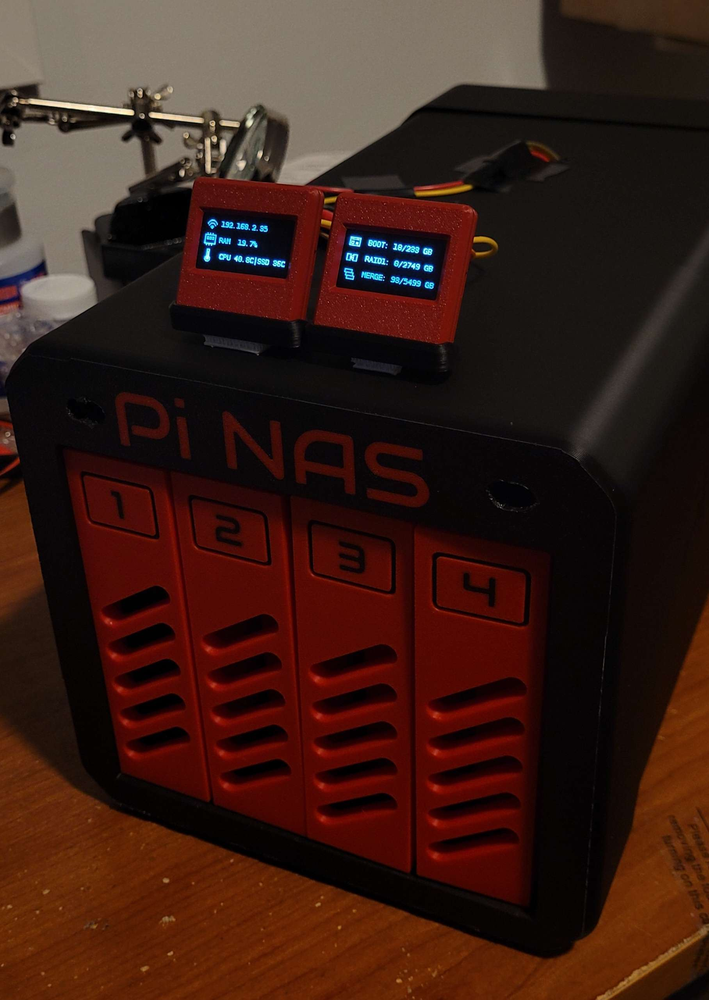
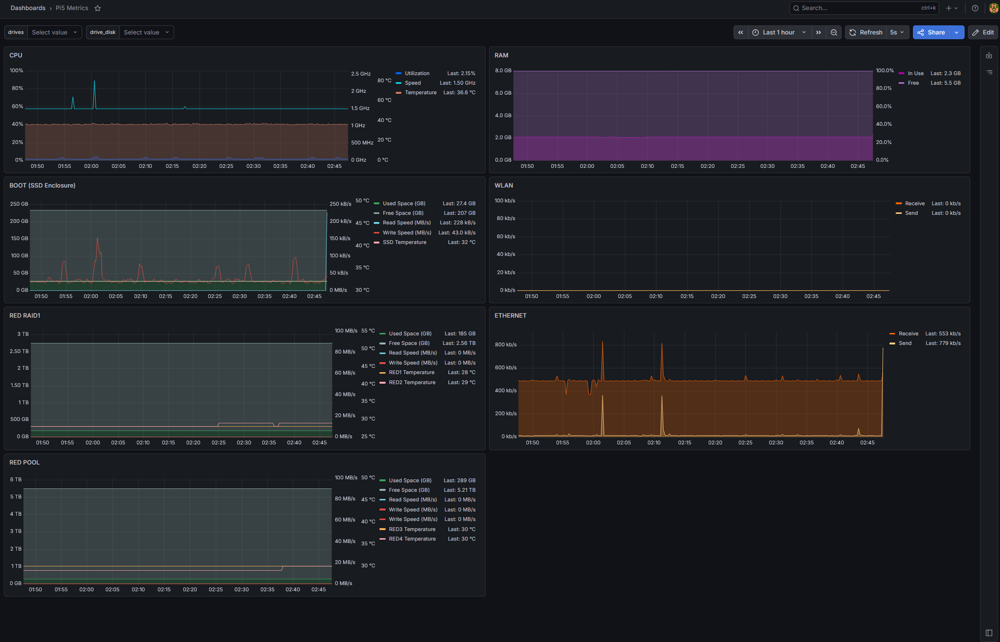

The goal
Bring important documents, a larger media library, and self-hosted services onto a compact system that is easy to check locally and access remotely.
Home lab / Systems & hardware
Four bays.
One self-hosted system.
A four-bay Raspberry Pi 5 NAS that brings together file storage, containerized services, private remote access, and hardware monitoring in a customized desktop enclosure.

View the complete buildHardware meets software
I extended the baseline build with SSD boot storage, dual LCD telemetry, quieter cooling, containerized services, and remote observability.
01 / The short version
Bring important documents, a larger media library, and self-hosted services onto a compact system that is easy to check locally and access remotely.
I configured the storage layout and Docker stack, added SSD boot and dual displays, and integrated Grafana monitoring with WireGuard and Pi-hole for remote use.
A complete home server with separate storage priorities, visible hardware health, and an encrypted route back to internal services from enrolled devices.
02 / Storage decisions
Documents / Redundancy
Two 3 TB WD Red drives form a RAID 1 volume. Mirroring prioritizes availability if one drive fails.
2 × 3 TB · RAID 1 · raid1_important
Media / Capacity
The other two drives form a larger media pool, trading disk redundancy for usable capacity where content can be replaced.
2 × 3 TB · Pooled storage · mass_media
The mirrored volume improves availability; a separate backup is still needed for important files.
Storage and services: OpenMediaVault manages filesystems, shares, and administration on 64-bit Raspberry Pi OS. Docker isolates the media stack, including Sonarr, Radarr, qBittorrent, and supporting services.
Access away from home: Enrolled devices connect through a self-managed WireGuard VPN, providing an encrypted route to the NAS and internal services without exposing those services directly to the public internet.
DNS filtering: VPN clients use the home Pi-hole instance, extending its network-level ad and tracker filtering to connected devices while away.
03 / Observability

Open full dashboardOn the desk or over the network
The top-mounted LCDs show immediate system status. A custom Grafana dashboard provides a broader remote view of utilization, drive capacity, temperatures, and network activity.
04 / Build credits
The enclosure STL files and baseline four-bay assembly follow Michael Klements’ project for The DIY Life. My work extends that foundation through the storage configuration, software stack, cooling, display housings, and observability described here.
Read Michael Klements’ original build guideThe enclosure was printed on a Bambu Lab P1S with AMS in red and black PLA. Custom top-mounted display housings bring the two LCDs into the finished unit, and a Noctua 12 V exhaust fan provides active cooling for the Pi and hard drives.
The ROCK Pi Penta SATA HAT connects the four WD Red drives. An M.2 SSD in a USB enclosure handles boot storage, while the LCDs report the IP address, CPU and RAM load, CPU and SSD temperatures, and storage utilization.